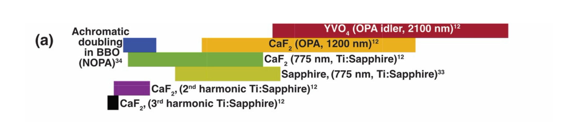
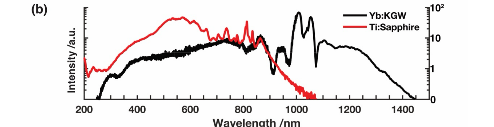

        <section>
          <h3 style="margin: 0 0 0.4em;">Why Solution-Phase Deep-UV TA Is Hard</h3>
          <div style="display: flex; gap: 1.2em; align-items: center;">
            <div style="flex: 1.2; min-width: 0;">
              
              <div style="position: relative;">
                
                <div class="fragment fade-out"
                     style="position: absolute; left: 0; top: 0; width: 100%; height: 77%;
                            background: #ffffff;"></div>
              </div>
            </div>
            <div style="flex: 1; font-size: 0.40em;">
              <div class="col-box" style="border: 1px solid #ddd; border-radius: 8px; padding: 0.7em 0.9em;">
                <ul style="margin: 0; padding-left: 1.2em;">
                  <li>Bulk-media continua: &lt;1 octave, 3&ndash;4 orders of magnitude drop into the UV</li>
                </ul>
              </div>
              <div class="col-box fragment" style="border: 2px solid #1565C0; border-radius: 8px; padding: 0.7em 0.9em; background: #f5f8ff; margin-top: 0.6em;">
                <ul style="margin: 0; padding-left: 1.2em;">
                  <li>Soliton continua: &gt;2 octaves, one order of magnitude, single shot</li>
                </ul>
              </div>
            </div>
          </div>
          <aside class="notes">
            <ul>
              <li>Context this audience won't have: solution-phase TA has been stuck with narrowband, low-flux UV probes for decades. CaF2 pumped at 800 nm gives ~320-750 nm; pushing into the UV means harmonics or achromatic doubling, each losing bandwidth/flux.</li>
              <li>Wavelength axis of panel (b) is visible from the start, same scale as panel (a) above — click removes the white box to reveal the Ti:Sapphire (red) and Yb:KGW (black) soliton spectra over that axis.</li>
              <li>Every piecewise bulk-media box above fits within a single soliton spectrum's bandwidth.</li>
              <li>Practical cost of the old approach: covering NIR-to-UV means separate scans, stitched together — laborious, and risks sample degradation between scans.</li>
            </ul>
          </aside>
        </section>
